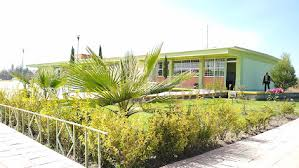
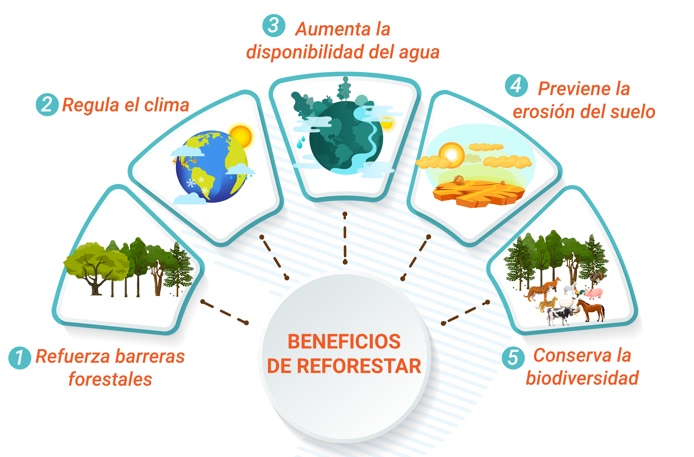

pagina de reforestacion
pagina de reforestacion

 pagina de reforestacion
pagina de reforestacion
Este proyecto trata sobre la reforestacion, en dondecada estudiante a trabajado con las diferentes materias de la preparatoria poder entender cual es el proposito de hacer la reforestacion, que beneficios tiene en poder trabajar en la reforestcion y que impacto tiene tanto con el medio ambiente y con la interaccion huumana, en la cual trabajamos una pagina en donde se ven apartados el cual hay beneficios del poder plantar arboles ya que nos ayude a entender su importancia, entonces a continuacion se presentaran los apartados con la informacion indicada
La reforestación impacta positivamente la educación de varias maneras. Mejora el entorno escolar, creando espacios verdes y atractivos que fomentan el aprendizaje al aire libre. También genera oportunidades para aprender sobre los ecosistemas, la biodiversidad y la importancia de los árboles. Además, la reforestación fortalece los lazos entre la comunidad educativa y la naturaleza, promoviendo el respeto por el medio ambiente y la responsabilidad social.
La reforestación embellece el entorno escolar, creando áreas verdes y sombra que hacen que la escuela sea más atractiva y cómoda.
Permite a los estudiantes aprender sobre el cuidado de los árboles, la siembra, la conservación del suelo y la importancia de la biodiversidad.
Fomenta la conciencia sobre la importancia de los bosques, el cambio climático y la necesidad de proteger el medio ambiente.
Los proyectos de reforestación promueven el trabajo en equipo, la responsabilidad y el compromiso con la comunidad y la naturaleza.
La reforestación puede involucrar a la comunidad local, fortaleciendo los lazos entre la escuela y la sociedad.
Los árboles capturan dióxido de carbono de la atmósfera, contribuyendo a la lucha contra el cambio climático.
La reforestación puede ser una herramienta poderosa para enseñar a los niños sobre la importancia de la naturaleza y la necesidad de protegerla.
Fomentar la participación comunitaria escolar y la toma de decisiones colectivas en la atención de situaciones y problemas socio-ambientales locales. Aportar a la adaptación y mitigación del cambio climático. Mejorar los niveles de bienestar.
Los árboles jóvenes, a lo largo de su crecimiento, purifican el aire, capturan carbono y recrean la vida silvestre.
La reforestación puede generar empleo local y fortalecer las comunidades, además de contribuir a la preservación de los recursos naturales.
La reforestación es una estrategia efectiva para mitigar el cambio climático, capturando carbono y reduciendo las emisiones de CO2.
Los árboles ayudan a prevenir la erosión del suelo y a mejorar la calidad del agua, protegiendo las cuencas hidrográficas y reduciendo el riesgo de deslizamientos de tierra y inundaciones.
La participación en proyectos de reforestación puede inspirar a las generaciones futuras a cuidar y preservar la naturaleza, promoviendo la sostenibilidad y la responsabilidad ambiental.
Dirección: Carretera libre s/n. Atlacomulco, localidad San Cristóbal de los Baños, Ixtlahuaca, Méx. C.P. 50754
Teléfonos: Sin teléfono fijo
Especialidades Formación para el trabajo:
■ Tecnologías de la Información y la comunicación
Impartir estudios de Bachillerato General a través de un marco curricular común, basado en el desarrollo de competencias que formen de manera integral jóvenes responsables, solidarios y comprometidos, capaces de incorporase a la educación superior y al sector productivo que les permita mejorar su calidad de vida
Ser una Institución de Educación Media Superior que se distinga a nivel estatal y nacional por su calidad, liderazgo académico y por el desarrollo del perfil de egreso de sus estudiantes, mediante la implementación de programas de mejora continua en un ambiente de responsabilidad y disciplina académica.
Brindar una educación integral y de calidad en la cual se promueva el desarrollo de valores en un ámbito de respeto que contribuya al crecimiento de nuestra entidad.
